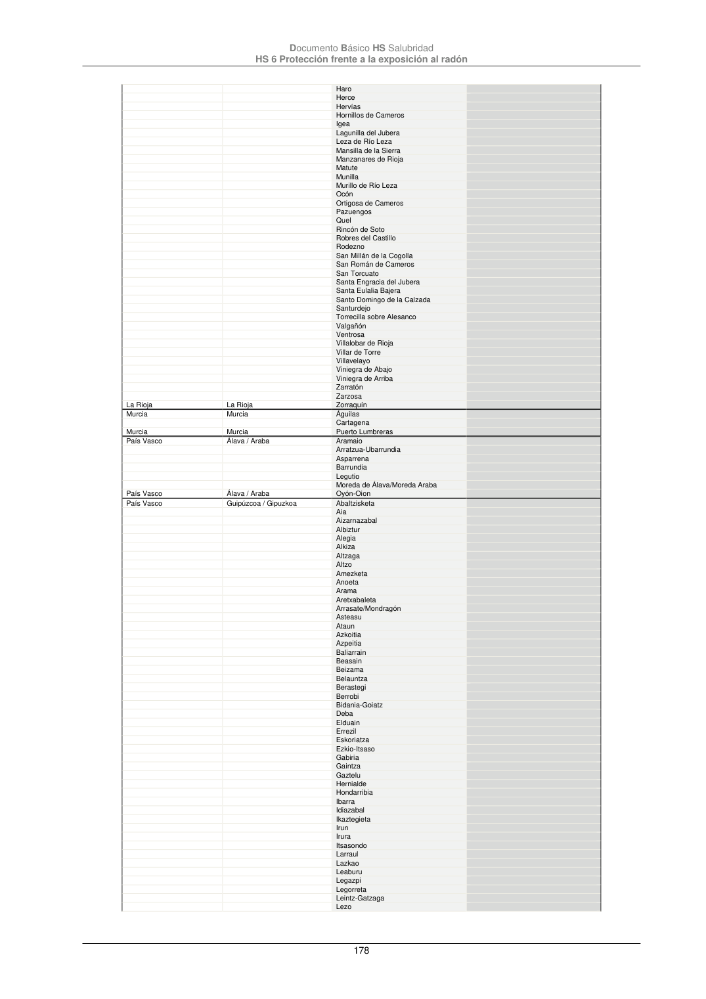

DB-HS Salubridad · edición 2022-06-14 · capa oficial
Documento DB-HS-oficial · SHA-256 del PDF 68df3caacc95f71aee2ec1ba7b2c65ae66155c21e3a8785521b8fdd4fd640d3b
Página física 178 de 184.
Copia fiel del PDF fuente · Fuente oficial
Ficha de la disposición en la fuente oficial
Formato: Texto de la página (Markdown)
Documento Básico HS Salubridad HS 6 Protección frente a la exposición al radón 178 Haro Herce Hervías Hornillos de Cameros Igea Lagunilla del Jubera Leza de Río Leza Mansilla de la Sierra Manzanares de Rioja Matute Munilla Murillo de Río Leza Ocón Ortigosa de Cameros Pazuengos Quel Rincón de Soto Robres del Castillo Rodezno San Millán de la Cogolla San Román de Cameros San Torcuato Santa Engracia del Jubera Santa Eulalia Bajera Santo Domingo de la Calzada Santurdejo Torrecilla sobre Alesanco Valgañón Ventrosa Villalobar de Rioja Villar de Torre Villavelayo Viniegra de Abajo Viniegra de Arriba Zarratón Zarzosa La Rioja La Rioja Zorraquín Murcia Murcia Águilas Cartagena Murcia Murcia Puerto Lumbreras País Vasco Álava / Araba Aramaio Arratzua-Ubarrundia Asparrena Barrundia Legutio Moreda de Álava/Moreda Araba País Vasco Álava / Araba Oyón-Oion País Vasco Guipúzcoa / Gipuzkoa Abaltzisketa Aia Aizarnazabal Albiztur Alegia Alkiza Altzaga Altzo Amezketa Anoeta Arama Aretxabaleta Arrasate/Mondragón Asteasu Ataun Azkoitia Azpeitia Baliarrain Beasain Beizama Belauntza Berastegi Berrobi Bidania-Goiatz Deba Elduain Errezil Eskoriatza Ezkio-Itsaso Gabiria Gaintza Gaztelu Hernialde Hondarribia Ibarra Idiazabal Ikaztegieta Irun Irura Itsasondo Larraul Lazkao Leaburu Legazpi Legorreta Leintz-Gatzaga Lezo

Datos candidatos: compruebe celdas y notas en el PDF.